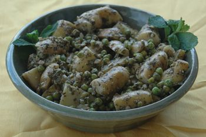

“Fingerling” is a popular term used to describe long, thin-skinned, fingerlike potatoes that come in a variety of flavors and colors. ‘Jersey Royal,’ an English heirloom, is renowned for its snowy white flesh and flavor akin to roasted chestnuts. The Dutch red fingerling called ‘Desiree’ has rich yellow flesh and a buttery taste. Blue and purple fingerlings, such as ‘Purple Peruvian,’ have earthy flavors similar to those of mushrooms or walnuts.
Because the texture of fingerlings is firm and waxy when cooked, they make an ideal potato for salads and casseroles. Waxy potatoes don’t absorb oil as readily as mealy potatoes, so they don’t go limp in salads or become soggy in casseroles. They’re also great steamed, sautéed and baked.
Fingerling potatoes are easy to cook and grow. Plus, learning more about specific varieties opens up a world of culinary possibilities. To sort it out, let’s begin with two of the best varieties: ‘La Ratte’ and ‘Roseval.’ Both were developed in France and are beloved by chefs for their wonderful flavors and versatility. Perhaps more important to the gardener, they also give excellent yields.
‘La Ratte’ (shown in Image Gallery) came into being through many years of selection by farmers in the Ardêche region of France. It became a culinary favorite upon its introduction to Paris markets in the late 1800s. The heirloom also can be found under two other names: ‘Corne de Bélier’ and ‘Saucisse de Lyon.’
The flavor of ‘La Ratte’ is unique - not quite earthy, a little on the mushroom side. Its skin is the color of parchment, but the flesh is yellowish-white. The yellow deepens in storage, and over time, the potato sweetens. The tubers are 6 to 8 inches in length, a little bumpy and slightly bent like a horn. In fact, because of their shape, fingerlings are sometimes referred to as “horns” or “pinecones.”
‘La Ratte’ is quite versatile in the kitchen, with a wonderful buttery texture. Like most fingerlings, it is perfect in salads. But it’s also frequently paired with smoked foods, and some cooks like to smoke the tubers themselves. To smoke this fingerling at home, first steam the potatoes over buttered water. The buttery steam coats the potatoes as they cook, improving the texture of the skins while preventing flavor and moisture from steaming out. When the potatoes are “al dente” (about 15 minutes), remove them from the steamer and transfer to a smoker. A covered barbecue also works as long as you keep the temperature down. Smoke over beechwood chips for 20 minutes. Sprinkle with coarse sea salt and fresh pepper. With a little cheese and red wine, this is a perfect meal.
Red wine is our link to the next great fingerling - ‘Roseval’ - because it’s a perfect mate for pinot noir and other light reds. Often sold as ‘French Fingerling,’ this variety has dark red skin and deep yellow flesh. Some American strains also have pink streaks in the flesh. ‘Roseval’ is a little more flat and oval than other fingerlings, and isn’t bent into the common horn shape. It is much waxier than ‘La Ratte,’ but the flavor is more delicate, with a hint of hazelnuts or butternuts. ‘Roseval’ makes an excellent new potato.
‘Roseval’ potatoes taste great steamed, but leave the skins on: Much of the flavor lies right under the skin. After steaming, serve these potatoes as a simple salad with an oil and vinegar dressing. Try walnut or hazelnut oil paired with shallot vinegar and chopped chives or chervil. (Shallot vinegar is easy to make. Add several peeled shallots to white wine vinegar, and let them soak until the flavor suits you.)
Fingerlings come in a wide variety of colors, shapes and sizes. And there are plenty of fun variety names to boot: ‘Russian Banana,’ ‘Swedish Peanut’ and ‘Chinese Truffle’ are just a few.
‘Bamberger Hörnle’ is a relative of ‘La Ratte’ that has pink skin and pale yellow flesh (see Image Gallery). The dark blue fingerling ‘Negresse’ is a stumpy tuber with an earthy walnut flavor. Another one to look for is ‘Pink Fir Apple,’ a knobby, yellow-fleshed potato that resembles ginger root.
Fingerlings are generally thin-skinned and do not store for as long as large, coarse baking potatoes. Some gardeners overcome this problem by planting fingerlings late - in June or July - so they can be dug in the fall and kept through the winter. This fall harvest is probably one reason why ‘La Ratte’ and ‘Roseval’ are often paired with wild game. But if you live in a cold area, you can still plant them by early April. They will take about 120 days from planting to harvest. Fingerlings will grow in most soils, but they thrive in rich, black, sandy loam. Keep them watered deeply and well.
Plant your seed potatoes about a foot apart. It’s common to plant potatoes in rows and hill them up with soil as they grow. Or you can plant them deep in raised beds using a bulb planter.
If you’ve got the space, it’s a good idea to rotate your potatoes each year. Work some aged manure into your soil the fall before planting, or add a little organic fertilizer, such as dried blood or rabbit pellets, directly into your planting holes.
If potato beetles plague your garden, stay on the lookout for orange eggs on the underside of leaves. You can destroy the hatchlings easily with insecticidal soap, but it won’t kill mature beetles.
When your plants begin to die back, the potatoes are ready to harvest. Don’t wait until the plants are dead, as it makes it more difficult to find the potatoes. After harvest, wash the potatoes and toss any tubers with minor blemishes into the “eat sooner rather than later” pile. You can keep the rest for a few months in a cool, dry, dark place.
2 tbsp nuts (walnuts, pecans, macadamias), chopped
1 cup fresh mint leaves
½ cup fresh parsley leaves
¼ cup olive oil
1 tbsp fresh ginger, grated
2 cloves garlic, minced
1 tbsp lemon juice
¼ tsp sugar
1½ pounds fingerling potatoes, cut in halves
1 cup fresh peas
To make pesto, puree all ingredients except potatoes and peas in a blender until smooth. Keep one half for now, and freeze the other half for another time. (You will need to make at least this much pesto for it to blend well.) Boil the potatoes until just tender. Drain and toss with pesto while potatoes are still hot. Boil peas, drain, and toss with the potato mixture. Serve warm or at room temperature. Serves 6 to 8.
- Ken and Christine Sheppard
Milk Ranch Specialty Potatoes
20094 Highway 149
Powderhorn, CO 81243
(970) 641-5634
Seed Savers Exchange
3094 North Winn Road
Decorah, IA 52101
(563) 382-5990
(Note: Many seed companies sell ‘Roseval’ as ‘French Fingerling.’)
|
MATTHEW T. STALLBAUMER The flavor of ‘La Ratte’ fingerling potatoes is delectable and unique - not quite earthy, a little on the mushroom side. |
ROB CARDILLO Delectable ‘Roseval’ potatoes |
ROB CARDILLO ‘La Ratte’ (golden), ‘Negresse’ (purple) and ‘Bamberger Hörnle’ (pink) fingerling potatoes.
|
|
 TABITHA ALTERMAN Fingerling Potatoes with Mint Pesto. See recipe in "One Potato, Two Potato,". |
WALTER CHANDOHA Plant seed potatoes (sections of cut potatoes with eyes) about a foot apart in rows. |
MILK RANCH SPECIALTY POTATOES Pretty potato blossoms, such as these from ‘Roseval’ fingerlings, can be picked for arrangements without harming the plant. |